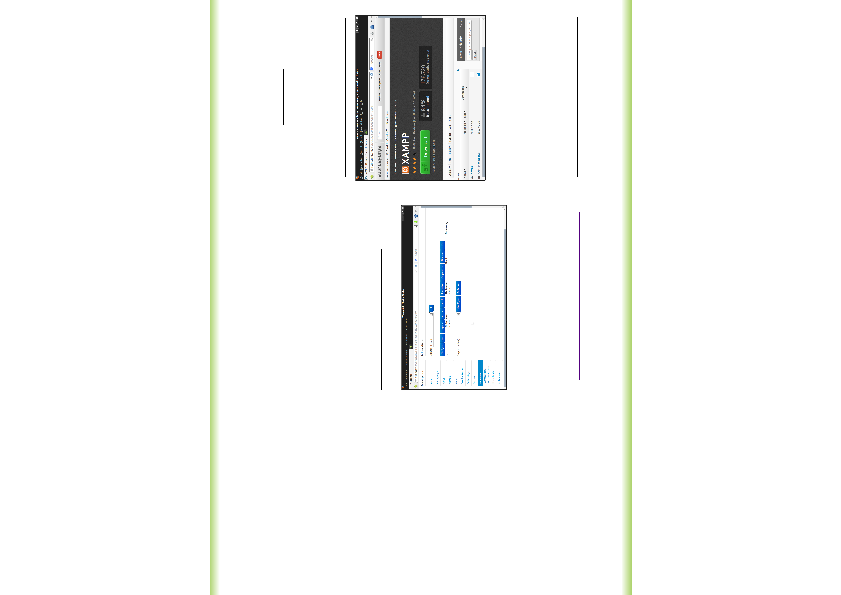

JWebportal
Das maßgeschneiderte
Organisationssystem für den
Alltag ist da!
Egal ob Sie Single sind oder Familie und Kinder
haben, ob sie es privat oder beruflich nutzen
möchten, mit dem Webportal können Sie alle
Bereiche ihres Alltags nach ihren persönlichen
Wünschen organisieren und planen. Das Schöne
daran ist, dass sie kein starres System erwartet,
sondern dass sie alles selbst nach ihren Wünschen
und Bedürfnissen gestalten können.
Terminkalender, Geburtstage, Geschenke-wünsche
entweder nach Anlässen ( Geburtstage, Weihnachten
etc ) oder Personen aufgerufen und ggf. mit dem
passenden Link versehen machen die Wunschzettel
ihrer Lieben übersichtlich und praktisch zu
handhaben. Gleichzeitig können Sie den Essensplan
für ihre Familie gestalten mit Rezepte-Pool zum
nachschlagen, die täglichen Aufgaben verteilen und
organisieren, ein handliches Adressbuch führen, ihre
Vorräte und ihre Einkaufsliste genauso verwalten wie
ihre Finanzen.
Das Ganze ist absolut einfach zu benutzen, ohne dass
Sie viel Vorkenntnisse haben müssen und sehr
übersichtlich. Per Mausklick können Sie alles
aufrufen was gerade nötig ist. Sie sparen Zettelkram
und können ganz einfach ordnen und auch
aufräumen. Wie ihr persönliches Webportal aussehen
soll bestimmen Sie selbst. Wir liefern lediglich das
Grundgerüst, welches komfortabel und übersichtlich
ist und für jeden ganz einfach persönlich anzupassen
ist.
Das Ganze befindet sich noch in der Entwicklung (
Open Source Projekt) und wir suchen außer
interessierten Nutzern/ Testern auch engagierte
Mitentwickler, die ihre Ideen einbringen und mit
programmieren.
Interesse? Dann schauen Sie doch mal rein unter
http://sourceforge.net/projects/jwphorald/
Wir bitten um Ihre Mithilfe!
Laden Sie diese Broschüre runter und geben Sie
diese an Freunde und Bekannte weiter. Sie
finden diese Broschüre als PDF-Datei unter:
http://sourceforge.net/projects/jwphorald/
Voraussetzung für die Installation von
Jwebportal
Unter Windows:
Einrichten eines Webservers (z.B. Apache), php
und MySQL. Dies kann relativ einfach mit dem
Installationspaket erstellt werden. Hierfür
eignet sich Xampp.
(http://www.apachefriends.org/de/xampp.html)
Läßt sich auch unter Android
installieren.
Mit KSWeb können die benötigten
Komponenten auf einem Android Gerät
installiert werden:
(http://www.apachefriends.org/de/xampp.html)